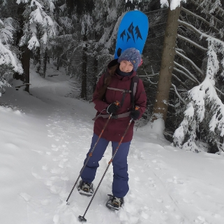
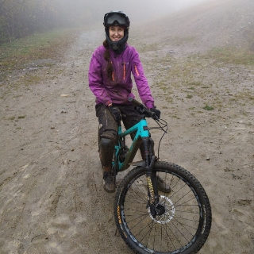
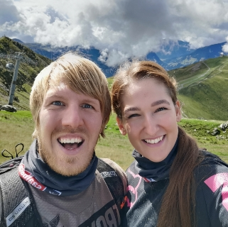

Jmenuji se Kateřina Procházková a bydlím v Plzni, ale původem jsem ze severní Moravy. Momentálně pracuji na volné noze a vytvářím webový design, který dělám dva roky. Primárně vytvářím weby ve Wordpressu na page builderu Elementor. Také navrhuji grafické návrhy v XD, AI a PS. Momentálně se učím v Affinity a ráda bych tento rok zvládla lottie animace a hlavně se naučit kódovat, aby mě Wordpress už neomezoval.
Ukázka webů, které jsem vytvořila.
*Pokus o flexbox, ještě že jsem byla na kurzu Bootstrap. :)
Měla jsem totiž úplně jiný sen. Chtěla jsem být designérkou v automobilovém průmyslu. Když jsem byla na vysoké škole v pátém ročníku, tak si mě vybrali na stáž do Mladé Boleslavi. Tím se mi zároveň splnil sen, ale tam přišlo i hodně velké vystřízlivění.
„Tohle pro mě nebyla cesta, kterou bych se chtěla vydat.“
Začala jsem řešit co dál. Přede mnou byl závěrečný ročník studia a portfolio bylo celé založené na transportním designu, o kterém jsem věděla, že dělat nechci.
Po stáži jsem hned začala přemýšlet nad svým vlastním produktem. Jelikož mám velikou zálibu si pořád něco zapisovat a čmárat, musel to být jedině deník. Když jsem měla vše hotové, jediné co mi chybělo, byl e-shop a tady byl první impulz! Neměla jsem dostatečné zkušenosti s tvorbou webu, tak jsem si ho zkusila vytvořit jen na shoptetu.
„U tohoto produktu jsem nasekala tolik chyb, že by to bylo na další vyprávění.“
Následovaly nějaké práce v oboru, přišla neskutečná osobní krize a já se rozhodla se vším seknout a změnit úplně obor. Zkusila jsem Marketing, ten mě neoslovil, ale potkala jsem tam kolegu, a ten mě seznámil s programátory a tím vše začalo..
Začátky byly hodně těžké a dny krátké. Nic jsem neuměla a vše jsem se učila za pochodu. Přece jen jsem se 10 let pohybovala jen v 3D. Dříve jsem říkala, ne to já neumím, řekni někomu jinému, teď řeknu, já to zvládnu.
„Tento obor je nekončící výzva a to mě na tom baví asi nejvíc.“
Když nejsem u počítače nebo nevytvářím něco kreativního, tak v zimě mě najdete na snowboardu a zbytek roku kempujeme a jezdíme na kole. Jo a miluju asijské jídlo.
  Ráda si vše stopuju, ale paradoxně mi dělá problém chodit někam na čas.
| Proces | Čas |
|---|---|
| Příprava textu | 1:45 |
| Wireframe | 0:15 |
| Návrh v XD | 2:40 |
| Kódování | 5:25 |
| Celkový čas | 10:05 |